<!DOCTYPE html PUBLIC "-//W3C//DTD XHTML 1.0 Transitional//EN"
        "http://www.w3.org/TR/xhtml1/DTD/xhtml1-transitional.dtd">
<html xmlns="http://www.w3.org/1999/xhtml">
<head>
    <meta http-equiv="Content-Type" content="text/html; charset=utf-8">
    <meta http-equiv="Content-Type" content="text/html; charset=utf-8"/>
    <meta http-equiv="X-UA-Compatible" content="IE=EmulateIE8"/>
    <title>silikomart首页</title>
    <link type="text/css" rel="stylesheet" href="css/reset.css"/>
    <link type="text/css" rel="stylesheet" href="css/main.css"/>
    <style type="text/css">
        * {  margin: 0;  padding: 0;  list-style-type: none;  }
        a, img {  border: 0;  }
        /* tabb*/
        .chef_bg { background-image: url(img/chef_red_02.png); background-position: bottom center; background-repeat:no-repeat;  }
        .chef {  margin: 0 auto;  width: 960px;  height: 540px;}
        .chef #cont {  width: 960px;  height: 440px;  z-index: 3;  color: #3d3d3d;  }
         #tabb {  margin-top: -10px; }
        .chef #cont div {  display: none;  }
        .chef #tabb {  width: 960px;  height: 100px;  margin: 0; position: absolute;}
        .chef #tabb li {  float: left;  display: inline;  width: 192px;  padding: 0px;  height: 100px;  }
        .chef #tabb a {  float: left;  text-decoration: none;  color: #ffffff;  width: 222px;  font-size:30px;
             font-weight:bold;padding: 0px;  height: 100px; text-shadow: 1px 2px 5px #888; }
        .chef #tabb a:hover {  color: #ffffff;}
        #tabb {  margin: 0;  padding: 0; position: relative;}

        .chef #tabb .one_1 { text-align:center;float:left;display:inline;width:192px; height:100px; line-height:100px; position:absolute; left:0px;}
        .chef #tabb .one_1 a{ text-align:center;background-image:url(img/img24.png);display:block; height:100px;}
        .chef #tabb .one_1 a:hover{background-image:url(img/img24_1.png);display:block; height:100px;}

        .chef #tabb .one_2 {text-align:center;float:left;display:inline;width:192px; height:100px; line-height:100px;position:absolute;left:183px;}
        .chef #tabb .one_2 a{ text-align:center;background-image:url(img/img24.png);display:block; height:100px;}
        .chef #tabb .one_2 a:hover{background-image:url(img/img24_1.png);display:block; height:100px;}

        .chef #tabb .one_3 {text-align:center;float:left;display:inline;width:192px; height:100px; line-height:100px;position:absolute;left:366px;}
        .chef #tabb .one_3 a{text-align:center; background-image:url(img/img24.png);display:block; height:100px;}
        .chef #tabb .one_3 a:hover{background-image:url(img/img24_1.png);display:block; height:100px;}

        .chef #tabb .one_4 {text-align:center;float:left;display:inline;width:192px; height:100px; line-height:100px;position:absolute;left:549px;}
        .chef #tabb .one_4 a{text-align:center; background-image:url(img/img24.png);display:block; height:100px;}
        .chef #tabb .one_4 a:hover{background-image:url(img/img24_1.png);display:block; height:100px;}

        .chef #tabb .one_5 {text-align:center;float:left;display:inline;width:222px; height:100px; line-height:100px;position:absolute;left:732px;}
        .chef #tabb .one_5 a{text-align:center; background-image:url(img/img24.png);display:block; height:100px;}
        .chef #tabb .one_5 a:hover{background-image:url(img/img24_1.png);display:block; height:100px;}

</style>
</head>
<body>
<!--顶部
<div class="headerBar">
<div class="topBar">
   <div class="comWidth">
   <div class="leftArea"></div>
   </div>
</div>
</div>
-->
<!--top-->
<div  style="width:100%; min-width:1000px; height:100px; position:relative; overflow:hidden;">
    <div style="position:absolute; left:50%; margin-left:-960px; height:100px; width:1920px; overflow:hidden;">
        
    </div>
</div>

<!--导航-->
<div class="navBox">
    <div class="comWidth">
        <ul class="nav fl">
            <li><a href="#.html">首页</a></li>
            <li><a href="#.html">关于我们</a>
                <ul id="shouye">
                    <li><a href="#.html">我们的简介</a></li>
                    <li><a href="#.html">我们的承诺</a></li>
                    <li><a href="#.html">我们的优势</a></li>
                    <li style="border-bottom:none;"><a href="#.html">友情提示</a></li>
                </ul>
            </li>
            <li><a href="#.html">产品展示</a>
                <ul>
                    <li><a href="#.html">冰淇淋</a>
                        <ul>
                            <li>
                                <div class="nav_text">
                                    <div class="one_1 fl"></div>
                                    <div class="one_2 fl">
                                        </br><p>
                                        经典原味司康，松软酥脆，甘甜适口。创新融入龙眼花蜜，散发芬芳气息，再缀以清甜饱满的提子干，香甜滋味恰到好处。搭配一杯星巴克的浓缩咖啡，香甜之余感受回味无穷。</p>
                                    </div>
                                </div>
                            </li>
                        </ul>
                    </li>

                    <li><a href="#.html">蛋糕装饰</a></li>
                    <li><a href="#.html">多用配件</a></li>
                    <li><a href="#.html">烘&nbsp;&nbsp;焙</a></li>
                    <li><a href="#.html">酒店备餐</a></li>
                    <li style="border-bottom:none;"><a href="#.html">巧克力</a></li>
                </ul>
            </li>
            <li><a href="#.html">主厨教室</a></li>
            <li><a href="#.html">最新活动</a></li>
            <li><a href="#.html">会员招募</a>
                <ul id="huiyuan">
                    <li><a href="#.html">会员简介</a></li>
                    <li style="border-bottom:none;"><a href="#.html">加入我们</a></li>
                </ul>
            </li>
        </ul>
        <div class="search_box fr">
            <input type="text" value="搜索" class="search_text"/>
        </div>
    </div>
</div>
<div class="chef_bg">
    <div class="chef">


        <div id="cont">
            <div id="tab1">
                <!--container-->

                </br>
                <span style="color: #868686;font-size: 22px; padding-left: 10px;">菜谱简介</span>  </br>

                

                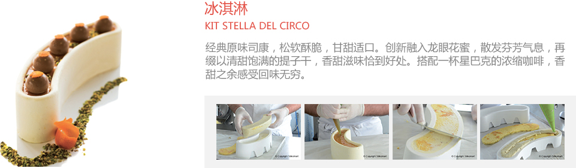

                <a href="#" class="a_block">
                    <span class="button_bg">
                        了解更多
                    </span>
                </a>


            </div>
            <div id="tab2">
                <!--container-->

          2222222222222222222

            </div>
            <div id="tab3">
                <!--container-->

           333333333333333333333

            </div>
            <div id="tab4">
                <!--container-->
444444444444444444444444444444444444444444444444444444444
            </div>
            <div id="tab5">
                <!--container-->
ffffffffffffffffffffffffff5555555555555555555555555
               </div>
        </div>
        <ul id="tabb">
            <li class="one_1"><a href="#" name="#tab1">冰淇淋</a></li>
            <li class="one_2"><a href="#" name="#tab2">蛋糕装饰</a></li>
            <li class="one_3"><a href="#" name="#tab3">烘焙</a></li>
            <li class="one_4"><a href="#" name="#tab4">酒店配餐</a></li>
            <li class="one_5"><a href="#" name="#tab5">巧克力</a></li>
        </ul>
    </div>
</div>


<script type="text/javascript" src="js/jquery-1.7.2.min.js"></script>
<script type="text/javascript">
    function resetTabb() {
        $("#cont > div").hide(); //隐藏所有内容
        $("#tabb a").attr("id", ""); //重置“id”
    }

    var myUrl = window.location.href; //取得超链地址
    var myUrlTab = myUrl.substring(myUrl.indexOf("#"));
    var myUrlTabName = myUrlTab.substring(0, 5);

    (function () {
        $("#cont > div").hide(); // 最初隐藏所有内容
        $("#tabb li:first a").attr("id", "current"); // 激活第一个选项卡
        $("#cont > div:first").fadeIn(); // 显示第一个选项卡的内容

        $("#tabb a").on("click", function (e) {
            e.preventDefault();
            if ($(this).attr("id") == "current") { //检测当前选项卡
                return
            } else {
                resetTabb();
                $(this).attr("id", "current"); // 激活这
                $($(this).attr('name')).fadeIn(); // 显示当前选项卡的内容
            }
        });

        for (i = 1; i <= $("#tabb li").length; i++) {
            if (myUrlTab == myUrlTabName + i) {
                resetTabb();
                $("a[name='" + myUrlTab + "']").attr("id", "current"); // 激活url选项卡
                $(myUrlTab).fadeIn(); // 显示url选项卡内容
            }
        }
    })()
</script>
<div> </div>
<!--主推厨师-->
<div class="bg_chef_w">
    <div class="chef_main clear_w">
        <div class="chef_pic_l">
            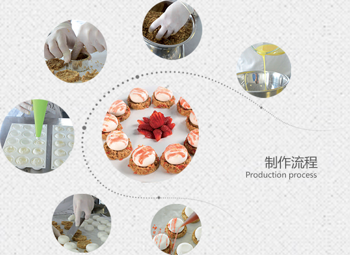
        </div>
        <div class="chef_c">
            <dl class="clear_w">
                <dd class="chef_pic_l_li">
                    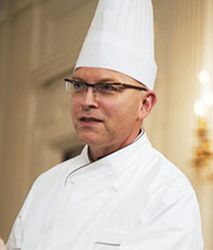
                </dd>
                <dd class="chef_pic_c_li">
                    Jackie Tao
                </dd>
                <dd class="chef_pic_c_li font13">
                    费尔蒙和平饭店行政总厨，2012年东方卫视人气节目《顶级厨师》美食评审。2014年8月20日江苏卫视国内首档明星美食竞技真人秀节目《星厨驾到》美食评审。
                </dd>
            </dl>

        </div>
        <div class="chef_r_stand">
            
        </div>
        <div class="chef_font_r">
            主<br/>
            厨<br/>
            简<br/>
            介
        </div>
    </div>

    <!--厨师简介-->
    <table class="iro_chef">

        <tr>
            <td class="td_chef">
                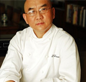
                <p class="chef_22font td_chef up_gap_w">Jackie Tao</p>
                <p class="td_chef">费尔蒙和平饭店行政总厨，2012年东方卫视人气节目《顶级厨师》美食评审。2014年8月20日江苏卫视国内首档明星美食竞技真人秀节目《星厨驾到》美食评审。</p>
            </td>
            <td class="td_chef">
                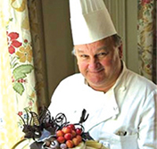
                <p class="chef_22font td_chef up_gap_w">Richard</p>
                <p class="td_chef">费尔蒙和平饭店行政总厨，2012年东方卫视人气节目《顶级厨师》美食评审。</p>
            </td>
            <td class="td_chef">
                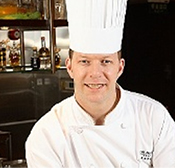
                <p class="chef_22font td_chef up_gap_w">Steven</p>
                <p class="td_chef">费尔蒙和平饭店行政总厨，2012年东方卫视人气节目《顶级厨师》美食评审。2014年8月20日江苏卫视国内首档明星美食。</p>
            </td>
            <td class="td_chef">
                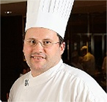
                <p class="chef_22font td_chef up_gap_w">Paxson</p>
                <p class="td_chef">费尔蒙和平饭店行政总厨，2012年东方卫视人气节目《顶级厨师》美食评审。2014年8月20日江苏卫视国内首档明星美食竞技真人秀节目《星厨驾到》美食评审。</p>
            </td>
            <td class="td_chef">
                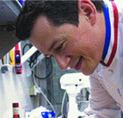
                <p class="chef_22font td_chef up_gap_w">Kimi</p>
                <p class="td_chef">费尔蒙和平饭店行政总厨，2012年东方卫视人气节目《顶级厨师》美食评审。2014年8月20日江苏卫视国内首档明星美食竞技真人秀节目《星厨驾到》美食评审。2014年8月20日江苏卫视国内首档明星美食竞技真人秀节目《星厨驾到》美食评审。</p>
            </td>
       </tr>


        <tr>
            <td class="noborder"></td>
        </tr>

        <tr>
            <td class="td_chef">
                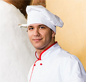
                <p class="chef_22font td_chef up_gap_w">Jackie Tao</p>
                <p class="td_chef">费尔蒙和平饭店行政总厨，2012年东方卫视人气节目《顶级厨师》美食评审。2014年8月20日江苏卫视国内首档明星美食竞技真人秀节目《星厨驾到》美食评审。</p>
            </td>
            <td class="td_chef">
                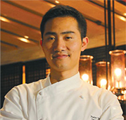
                <p class="chef_22font td_chef up_gap_w">Richard</p>
                <p class="td_chef">费尔蒙和平饭店行政总厨，2012年东方卫视人气节目《顶级厨师》美食评审。</p>
            </td>
            <td class="td_chef">
                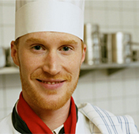
                <p class="chef_22font td_chef up_gap_w">Steven</p>
                <p class="td_chef">费尔蒙和平饭店行政总厨，2012年东方卫视人气节目《顶级厨师》美食评审。2014年8月20日江苏卫视国内首档明星美食。</p>
            </td>
            <td class="td_chef">
                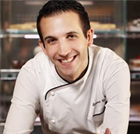
                <p class="chef_22font td_chef up_gap_w">Paxson</p>
                <p class="td_chef">费尔蒙和平饭店行政总厨，2012年东方卫视人气节目《顶级厨师》美食评审。2014年8月20日江苏卫视国内首档明星美食竞技真人秀节目《星厨驾到》美食评审。</p>
            </td>
            <td class="td_chef">
                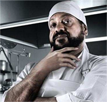
                <p class="chef_22font td_chef up_gap_w">Kimi</p>
                <p class="td_chef">费尔蒙和平饭店行政总厨，2012年东方卫视人气节目《顶级厨师》美食评审。2014年8月20日江苏卫视国内首档明星美食竞技真人秀节目《星厨驾到》美食评审。2014年8月20日江苏卫视国内首档明星美食竞技真人秀节目《星厨驾到》美食评审。</p>
            </td>
        </tr>
    </table>
</div>


<div class="foot">
    <ul>
        <li style="background-image:url(img/icon_1.png); background-position:left; background-repeat:no-repeat; padding-left:30px; width: 290px; float:left;">
            家庭专用
        </li>
        <li style="background-image:url(img/icon_2.png); background-position:92px; background-repeat:no-repeat;
 text-align: center;">我们的优势
        </li>
        <li style="background-image:url(img/icon_3.png); background-position:208px;background-repeat:no-repeat;
 text-align: right;">意大利制造
        </li>
    </ul>
</div>


<div class="footer">
    <div class="comWidth">

        <p>SILIKOMART S.R.L, via Tagliamento, 78 - 30030 Mellaredo di Pianiga(Ve), Italy
            P.IVA 03712840283, R.E.A 310642, CAP. SOC. 30.000,00 €
            </br>Silikomart - tutti i diritti riservati - all rights reserved
        </p>
    </div>
</div>

</body>
</html>
